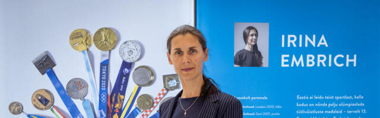

| Career start: | She began competing in fencing in 1996. | |
| Club: | Vehklemisklubi IREM, Tallinn, EST | |
| Name of coach: | Kaido Kaaberma, EST | |
| Handedness: | Left |
- Memorable sporting achievement Winning gold in team epee at the 2020 Olympic Games in Tokyo.
- Awards and honours In 2022 she received the Order of the White Star 2nd class in recognition of her services to the Estonian state following her gold medal in team epee at the 2020 Olympic Games in Tokyo.
- She and her teammates Julia Beljajeva, Erika Kirpu, and Katrina Lehis received the Best Female Multiple Athlete Event of Tokyo 2020 prize at the 2021 ANOC [Association of National Olympic Committees] Awards in Crete, Greece.
- In 2019 she was presented with the Order of the White Star [Third Class] in Estonia.
- She was part of the 2017 Team of the Year in Estonia.
- She was named the 2007 Best Female Athlete in Estonia.
- Milestones Along with Julia Beljajeva, Erika Kirpu, and Katrina Lehis, she was part of the women's epee team that won Estonia's first gold medal in fencing at the Olympic Games. They beat the Republic of Korea in the final at the 2020 Games in Tokyo.